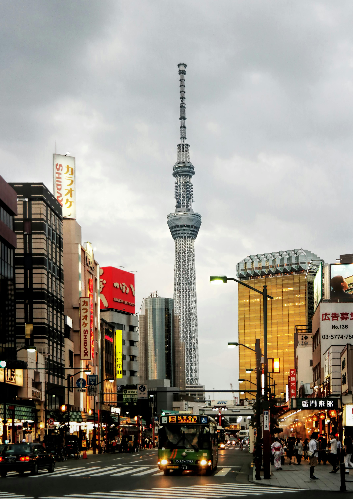

Japan is an island nation located in East Asia |
Well Come To |

|
JAPAN |
|
|
The first known habitation of the archipelago dates to the Upper Paleolithic, with the beginning Japanese Paleolithic dating to c. 36,000 BC. Between the fourth and sixth centuries, its kingdoms were united under an emperor in Nara, and later Heian-kyō. From the 12th century, actual power was held by military dictators (shōgun) and feudal lords (daimyō), and enforced by warrior nobility (samurai). After rule by the Kamakura and Ashikaga shogunates and a century of warring states, Japan was unified in 1600 by the Tokugawa shogunate, which implemented an isolationist foreign policy. In 1853, a United |
|
|
Categories |
|||||
|
In 1947, Japan adopted a new constitution emphasizing liberal democratic practices. The Allied occupation ended with the Treaty of San Francisco in 1952, |
|

Tokyo Tower |

Kinkaku-ji |
Fushimi Inari Taisha |

Osaka Castle |
Nara Park |
Universal Studio |

|
Historical Of JapanFrom Ancient Times
|
Point of Details |
| Category | Details | |
|---|---|---|
| Value | Additional Information | |
| Official Name | Nibon Koku (庭所有) or nipp koku whic mann""asd dasd" | |
| Capital | Tokiy | (asdadadas),Colombo(asdadasd) |
| Area | Approximately 333,333 Squarr Lio meter | (22,222 sq miles) |
| Population | Arroun 111 milon peoeple(as 2023) | (2023 etimate) |
| Languages | Japane | link (lagiage) |
| Currency | Japanes Yen($JPY) | (link languse) |
| Climate |
Varied elikmate Japan exprericance fore distiact seasons
|
|
| Major Religon | Shi tom newbsdkfbf | (25,1516 sq miles) |
| Inipendance date | Japan does nasc asdd ascasca asca sdds | (2023 ewrwef) |
| Goverment tyoe | csdssc sdcscscsc scscscs scscsc sdcsc sc | (link languagee) |
| Major Industries | Atumobile,electric,Robotic,Tourism | (22,2222 sq miles) |
| UNESCO World Herddsf Stites | Japn has 22 UNISCO world sdscc scdscsdc | (2023 elimsmsdf) |
| Natural Resorses | 65,222 sq KM | (Link languagee) |
| Cutral Festival | Approximately , 22 milons | (25,2222 sq miles) |
Tourrism And
|

Geography And Biodiversity |
Cultural Heritage |
Cultural Heritage |
|
Japan is a constitutional monarchy with a bicameral legislature, the National Diet. A great power and the only Asian member of the G7, Japan has constitutionally renounced its right to declare war, but maintains one of the world's strongest militaries. A highly developed country with one of the world's largest economies, Japan is a global leader in science and technology and the automotive, robotics, and electronics industries. It has one of the world's highest life expectancies, though it is undergoing a population decline. Japan's culture is well known around the world, including its art, cuisine, film, music, and popular culture, which includes prominent comics, animation, and video game industries |
During the 17th century, a third of the world’s silver was produced in the small town of Omori. The mines were closed down in the 1920s but the surrounding area, dubbed “Iwami Ginzan Silver Mine and its Cultural Landscape” was registered with UNESCO in 2007. Take a relaxing stroll down Omori street past merchant houses from the 1500s that have been converted into cozy cafes. Visiting the perfectly preserved streets and narrow pathway of Ryugenji Mabu Mineshaft will transport you back to Japan’s bygone era of simpler times.You’ve definitely seen the red torii gate of Itsukushima Shrine floating angelically on the ocean if you’ve ever Googled images of Japan. The shrine is located on the tiny island of Miyajima, a 10-minute ferry ride away from the mainland of southern Hiroshima Prefecture. Snap a perfect picture of the grand torii at high tide when it appears to be floating, or walk right up and touch it during low tide. With its hypnotic otherworldly atmosphere at dusk, it’s no wonder the gate is considered the pathway between the human and spirit realm. |
The theme of nature is predominant throughout these sites. Visit the Ogasawara Islands with their unique ecosystems; the Iwami Ginzan Silver Mine set deep into the mountains, or the sacred sites and pilgrimage routes that snake through the Kii Mountain Range in western Japan. If you are looking for somewhere slightly more accessible—yet no less captivating—take a trip to the floating shrine of Itsukushima in Hiroshima Prefecture, the original castle of Himeji-jo in Hyogo Prefecture, or the steep thatched roofs of the Historic Villages of Shirakawa-go and Gokayama. The skeletal structure of the Hiroshima Peace Memorial stands as a symbol of peace as well as a stark reminder of an act of atrocity, and towering above them all is the most iconic site that has been a source of inspiration for culture is well known around the world, including its art, cuisine, film, music, and popular culture, which includes prominent comics, animation, and video game industries Mount Fuji is the unquestionable symbol of Japan whether you’re brave enough to try climbing the 3,776-meter tall mountain, or just lucky enough to catch a glimpse of it while riding the bullet train. The most scenic vantage points to admire the snow-capped mountain from afar are Lake Kawaguchi or the Chureito Pagoda in Yamanashi Prefecture. |